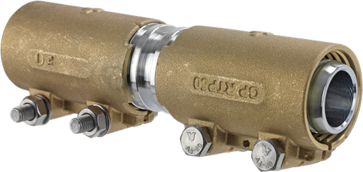
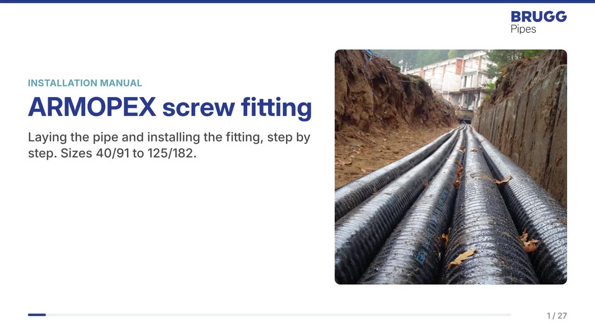
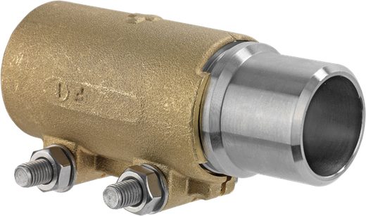
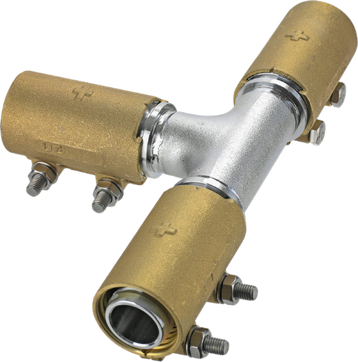

ARMOPEX family
Pipe, connectors and installation.

ARMOPEX UNO
Single pipe- Seven sizes, 40/91 to 125/182
- 174 psi (12 bar)
- 185 °F (85 °C) continuous

Clamp connectors
Fittings- Male thread, weld end
- Coupling, T-connector
- Installed without special tools

Installation
Videos and manual- Screw fitting, step by step
- English and Ukrainian narration
- Installation Manual, US edition
Single pipe
ARMOPEX UNO
Seven sizes in coils. Aramid-reinforced PE-Xa carrier pipe with aluminum oxygen barrier, PUR foam and LLDPE jacket.
- Sizes40/91 to 125/182
- Operating pressure174 psi (12 bar)
- Continuous temperature185 °F (85 °C)
- Peak temperature239 °F (115 °C) for 100 h
| Type | Carrier pipe OD | Carrier pipe ID | Jacket OD | Capacity | R-value °F·ft·h/BTU | Weight | Min. bending radius | Max. coil length |
|---|---|---|---|---|---|---|---|---|
| 40/91 | 1.575 in (40.0 mm) | 1.283 in (32.6 mm) | 3.66 in (93 mm) | 0.0672 gal/ft (0.835 l/m) | 12.54 | 0.9 lb/ft (1.4 kg/m) | 2.7 ft (0.8 m) | 1,400 ft (427 m) |
| 50/111 | 1.961 in (49.8 mm) | 1.606 in (40.8 mm) | 4.45 in (113 mm) | 0.1052 gal/ft (1.307 l/m) | 12.18 | 1.3 lb/ft (2.0 kg/m) | 3.0 ft (0.9 m) | 985 ft (300 m) |
| 63/126 | 2.433 in (61.8 mm) | 2.024 in (51.4 mm) | 5.04 in (128 mm) | 0.1671 gal/ft (2.075 l/m) | 10.68 | 1.7 lb/ft (2.6 kg/m) | 3.3 ft (1.0 m) | 700 ft (213 m) |
| 75/142 | 2.866 in (72.8 mm) | 2.417 in (61.4 mm) | 5.63 in (143 mm) | 0.2384 gal/ft (2.961 l/m) | 9.89 | 2.3 lb/ft (3.4 kg/m) | 3.7 ft (1.1 m) | 350 ft (107 m) |
| 90/162 | 3.406 in (86.5 mm) | 2.898 in (73.6 mm) | 6.42 in (163 mm) | 0.3425 gal/ft (4.254 l/m) | 9.09 | 3.1 lb/ft (4.6 kg/m) | 4.0 ft (1.2 m) | 300 ft (91 m) |
| 110/162 | 4.130 in (104.9 mm) | 3.543 in (90.0 mm) | 6.42 in (163 mm) | 0.5123 gal/ft (6.362 l/m) | 6.31 | 3.8 lb/ft (5.7 kg/m) | 4.0 ft (1.2 m) | 300 ft (91 m) |
| 125/182* | 4.606 in (117.0 mm) | 4.024 in (102.2 mm) | 7.20 in (183 mm) | 0.6605 gal/ft (8.203 l/m) | 6.16 | 4.8 lb/ft (7.2 kg/m) | 4.6 ft (1.4 m) | 120 ft (37 m) |
* Size 125/182 is not made in the USA. Minimum bending radius in feet is rounded up from the metric value. R-value per linear foot of single pipe. Values from the ARMOPEX Technical Data Sheet, November 16, 2026.
Embed the pipes in at least 4 in (approx. 10 cm) of rounded, washed sand on all sides, maximum grain size 0.31 in (8 mm). Suitable for H20 traffic load with a minimum cover of 24 in (approx. 60 cm) beneath the road surface.
Trench, two pipes
| Jacket OD | Trench width, two pipes | Trench depth |
|---|---|---|
| 3.66 in (93 mm) | 19.7 in (50 cm) | 31.5 in (80 cm) |
| 4.45 in (113 mm) | 21.7 in (55 cm) | 33.5 in (85 cm) |
| 5.04 in (128 mm) | 21.7 in (55 cm) | 33.5 in (85 cm) |
| 5.63 in (143 mm) | 23.6 in (60 cm) | 33.5 in (85 cm) |
| 6.42 in (163 mm) | 25.6 in (65 cm) | 35.4 in (90 cm) |
| 7.20 in (183 mm) | 27.6 in (70 cm) | 37.4 in (95 cm) |
Fittings
Clamp connectors
Clamp connectors with steel insert, brass clamp and stainless steel bolts, installed without special tools. Also available: 90° house entry bends, pre-insulated T-connections, clip shells, connecting sockets, end caps and wall seals.
- SystemOne screw fitting system for all seven sizes
- DocumentFittings and Accessories Data, 3 pages



Videos and manual
Installation
One screw fitting system for all seven sizes. The narrated video follows the installation manual step by step. Installation only by trained personnel; training is offered on site or online.
- Video, English5:45 min
- Video, Ukrainian15:44 min
- ManualUS edition and factory original
Contact
Send us your route. We size it and price it.
BRUGG Pipes supports your project with pressure-loss and heat-loss sizing, routing and installer training.